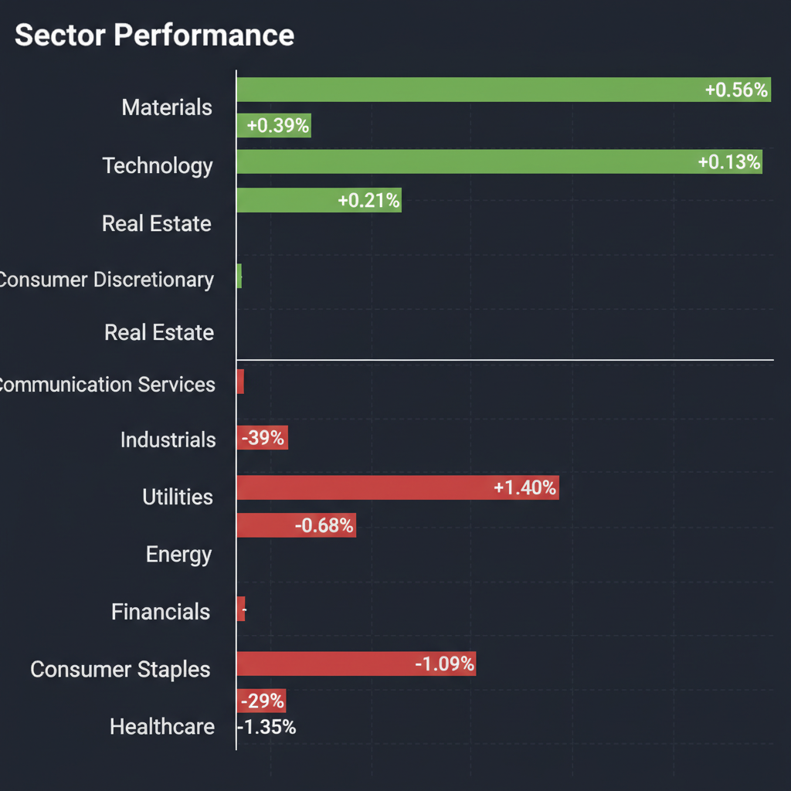
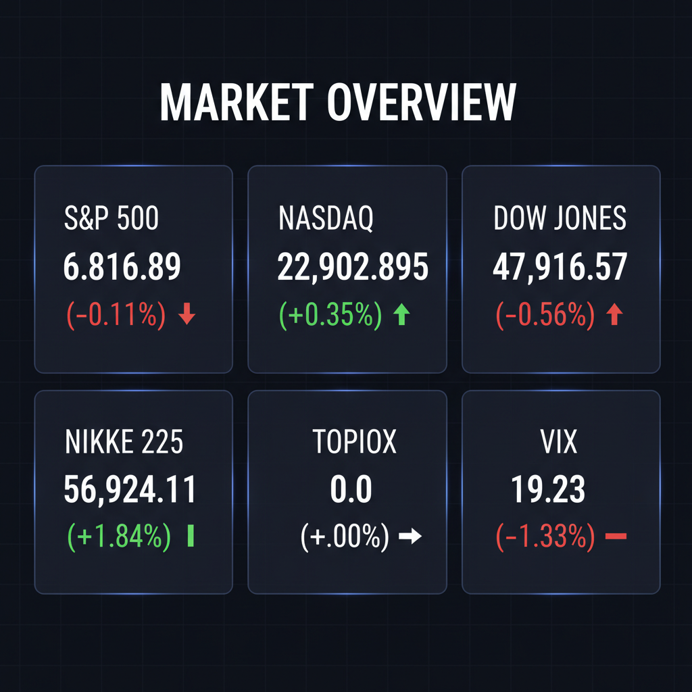

Daily Investment Report - 2026-04-12
Generated: 2026/4/12 8:15:58


投資チームの各専門家による分析を統合した、本日の最終投資レポートをお届けします。
1. エグゼクティブサマリー
- 中東の停戦期待により市場はリスクオンに傾き主要指数は高値圏にありますが、実体経済では燃料高による個人消費の減退が進行しています。
- AI・半導体などの大型ハイテク株への一極集中と過熱感がピークに達しており、決算の失望や地政学リスクの再燃による急落リスク（スタグフレーション・ショック）に厳重な警戒が必要です。
- 投資戦略としては、大型株の利益確定とキャッシュ確保を進めつつ、インフレ耐性や独自の成長ストーリーを持つ「割安な優良中小型株」への選別投資を推奨します。
2. 注目銘柄リスト
大型ハイテク株のバリュエーションに過熱感がある現状を踏まえ、高い営業利益率と安全マージンを持つ中小型株を中心に推奨します。
強気（買い推奨）
- プログリット（9560） [時価総額約100億〜200億円規模]: AIを活用したSaaS型英語コーチングを展開しており、原価率が極めて低く高ROE（30%超）と年率20%超の成長を誇るため。
- コメ兵ホールディングス（2780） [時価総額約500億円規模]: インフレに伴う消費者の「生活防衛（節約志向）」がリユース事業の強烈な追い風となっており、ROICの継続的な改善と割安なPER水準が魅力なため。
- Whitestone REIT（WSR） [時価総額約$600M]: スーパーマーケット等の生活必需品を扱うテナントを核としており景気後退に強く、インフレ下でも賃料引き上げ力を持つ割安な小規模REITであるため。
- アドヴァンG（7463） [時価総額約400億円規模]: PBR1倍割れながら実質無借金の強固なバランスシートを持ち、安定した利益率と継続的な自社株買いにより下値リスクが限定的な良質バリュー株であるため。
中立（様子見）
- Organon（OGN） [時価総額約$5B]: 指標面（低PER・高配当）では一見割安ですが、多額の有利子負債を抱えており、負債返済の進捗（財務キャッシュフローの改善）を確認するまではバリュートラップの懸念があるため。
- 富士通（6702） [大型株]: AI時代のSIerとしての戦略が奏功し機関投資家の評価は高いですが、相場全体の買われすぎ水準における急な調整リスクに巻き込まれる可能性があるため。
弱気（警戒）
- イオン（8267） [大型株]: 人件費や物流費などのコストプッシュインフレを価格転嫁しきれず、販管費増による営業利益率の圧迫が直近の決算で明白になったため。
- セブン＆アイ・ホールディングス（3382） [大型株]: 米国のガソリン高騰による消費の冷え込みの影響を直接受けやすく、チャート上でも下値支持線を割り込む危険性があるため。
3. セクター推奨ランキング
マクロ要因（インフレや原油高）の影響を受けにくく、AI活用による生産性向上で構造的な高成長と利益率の改善が見込めるため。
インフレの長期化（燃料コストの高止まり）に対して価格転嫁力を持ち、ポートフォリオのインフレヘッジ（防衛力）として機能するため。
直近では資金流出が見られますが、景気後退や消費の減速が強く意識される今後のフェーズにおいて、ディフェンシブ性が見直される逆張りの仕込み対象となるため。
ガソリン価格の高騰による消費者の生活防衛（運転控えなど）がトップラインとマージンを直撃しており、利益成長の鈍化が避けられないため。
4. 今週の注目イベント
- 蘭ASMLおよび台湾TSMCの決算発表とガイダンス提示
- 米国金融大手の決算発表
- IMF（国際通貨基金）による世界経済見通しの発表
- 米国とイランの和平協議の進展、およびホルムズ海峡のタンカー運航状況
5. リスク要因
- 米国政府によるイラン凍結資金解除の否定をきっかけとした協議決裂と、それに伴う原油価格のコントロール不能な急騰リスク。
- 米国ドライバーの消費引き締めに代表される、コストプッシュインフレの持続によるスタグフレーション（物価高と景気後退の同時進行）の顕在化。
- TSMCやASMLの決算・ガイダンスが市場の完璧な期待（AI需要）を僅かでも下回った場合に発生する、大型ハイテク株のバリュエーション急収縮とパニック売り。
- 株価（テクニカル面の高値更新）と実体経済（ファンダメンタルズの消費悪化）のダイバージェンス（乖離）による突然のトレンド転換。
6. アクションアイテム
- 期待先行で買われている値がさハイテク株・半導体株のポジションを一部利益確定し、過熱感に対するデリスキング（リスク低減）を実行する。
- 決算でネガティブサプライズとなった大手小売セクターの銘柄は、テクニカルな底打ちが確認できるまで押し目買いを避け、ポジションの縮小を検討する。
- 資金の一部を、価格転嫁力があり独自の成長ストーリーを持つ優良中小型株（プログリット、コメ兵HDなど）へローテーションする。
- 複合的なショックに備えキャッシュ比率を高めるか、VIXが19台と比較的安価な今のうちにプットオプション等のテールリスク・ヘッジを構築する。